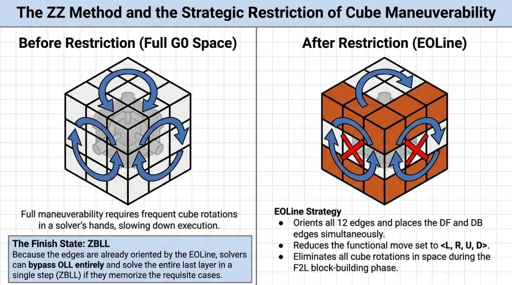

2
2단계 · ZZ — 모서리 방향을 먼저 맞추고 네 면만 돌리기
방법: 움직임 제한 (EOLine)일상: 일방통행 길
박사상황 질문 — F와 B를 돌리지 않기로 약속하면, 큐브에서 「절대 바뀌지 않는 것」이 생길까요?
왜 이 방법을 쓰나
- 문제 상황: 두 층 단계를 고쳐 쥐지 않고, 마지막 층을 한 번에 끝내고 싶어요.
- 앞 방법의 한계: CFOP의 F2L은 F·B도 써서 손을 자주 바꿔 쥐고, 마지막 층은 두 번 봐야 해요.
- 해법: 처음(EOLine)에 모서리 12개의 방향을 모두 맞추고, 그다음엔 L·R·U·D만 돌려요. 이 네 면은 모서리 방향을 절대 바꾸지 않아요.
쉽게 말하면 — 일방통행만 다니기로 하면 차가 거꾸로 서 있을 일이 없어요.
수학 수식을 어려워하는 조수가 대신 물어봅니다

조수 하루 (수강생)「모서리 방향」이 뭐예요? 모서리가 거꾸로 꽂힐 수도 있어요?
학교 수학으로 보면: 중학교 「짝수와 홀수」, 그리고 「나머지」: 2로 나눈 나머지가 0이면 짝수.
| 식 조각 | 읽는 법 | 뜻 |
|---|
| 방향 맞음 | 0 | 모서리의 기준 스티커(위아래 색, 없으면 앞뒤 색)가 기준 자리에 |
| 방향 틀림 | 1 | 모서리가 같은 자리에 뒤집혀 꽂힘 |
| F, F′, B, B′ | 앞·뒷면 90° | 한 번에 모서리 4개의 방향을 뒤집음 |
| L, R, U, D, F2, B2 | 나머지 움직임 | 모서리 방향을 하나도 안 바꿈 |
숫자로 한 번 해 보기처음: 뒤집힌 모서리 0개
F 한 번: 4개가 뒤집힘 → 4개
R U L D를 아무리 해도: 4개 그대로
F 또 한 번: 4개가 다시 바뀌어 0개 또는 다른 짝수

조수 하루 (수강생)네 개씩 바뀌니까 늘 짝수구나. 그리고 F, B만 안 쓰면 아예 안 바뀌고요!
일상으로 치면일방통행 길로만 다니기로 정하면, 차가 반대 방향을 보고 서 있을 일이 생기지 않아요. 처음에 차 방향만 맞춰 두면 끝까지 유지돼요.
큐브에서는ZZ는 처음 EOLine에서 모서리 방향을 모두 맞추고, 이후 L·R·U·D만 돌려요. 이 움직임들의 모음(⟨L, R, U, D⟩)은 모서리 방향을 바꾸지 않으므로, 마지막 층은 OLL 없이 ZBLL 한 번(493가지)으로 끝낼 수 있어요.

박사「L·R·U·D만」으로 바꾸고 아무렇게나 30수를 여러 번 눌러 보세요. 뒤집힌 모서리가 생기나요?

주판봇30수나 섞었는데 하나도 안 뒤집힐 리가요. 몇 개는 생기겠죠!

초파리 연구원18가지 전부로 바꿔서 F 한 번만 눌러 봐. 숫자가 어떻게 변해?
모서리 방향 실험 — 쓸 수 있는 움직임 바꾸기
풀이 — 한 걸음씩
- 모서리 조각은 같은 자리에 「바로」 또는 「뒤집혀」 꽂힐 수 있어요. 뒤집힌 개수를 보라 테두리로 표시했어요.
- L·R·U·D(와 그 180°)만 쓰면 아무리 돌려도 뒤집힌 모서리 수가 그대로예요.
- F나 B를 90°로 돌리면 모서리 4개의 방향이 한꺼번에 바뀌어요. 그래서 뒤집힌 수는 늘 짝수예요(08장에서 다시).
- ZZ는 이 성질을 이용해, 처음에 방향을 다 맞춰 두고 끝까지 지켜요.
이 단계의 한계 — EOLine 단계는 큐브를 보고 뒤집힌 모서리를 「알아보는」 연습이 필요해서 처음 배우기가 어려워요. 그리고 ZBLL 493가지는 외울 양이 커요(05장).
박사의 해석 — 「쓸 수 있는 동작을 일부러 줄이면, 지켜지는 성질이 생긴다」 — 이 문장이 09장 부분군과 10장 컴퓨터 풀이의 출발점이에요.
원자료 인포그래픽 보기 (영어 그림)
원자료 「The ZZ Method and the Strategic Restriction of Cube Maneuverability」: EOLine으로 ⟨L, R, U, D⟩만 사용, ZBLL로 OLL 생략.

더 알고 싶은 분께 — 정확한 정의 (몰라도 됩니다)
모서리 방향 eᵢ ∈ {0, 1}에 대해 F, F′, B, B′은 네 개의 eᵢ에 1을 더하고(2로 나눈 나머지), 다른 기본 움직임은 eᵢ를 바꾸지 않는다. 따라서 ⟨L, R, U, D⟩와 ⟨L, R, U, D, F², B²⟩는 모서리 방향을 보존하는 부분군이고, Σeᵢ mod 2 = 0은 모든 움직임에서 보존된다.